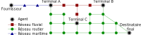
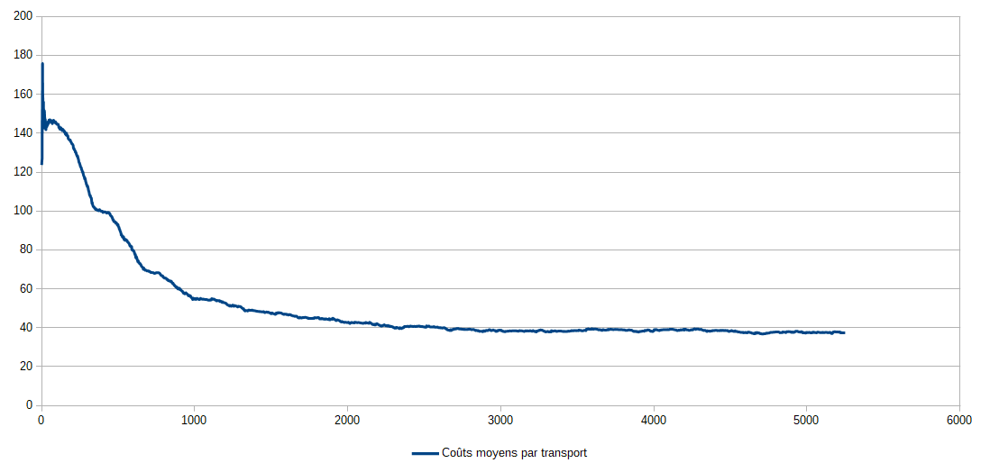

Thibaut Démare - LITIS
thibaut.demare@univ-lehavre.fr
thibaut.demare@univ-lehavre.fr
Modélisation multi-agent d'un système logistique
transport multi-modal de la marchandise, du port aux destinataires
transport multi-modal de la marchandise, du port aux destinataires
Séminaire SPLOTT
IFSTTAR
18 Mars 2019
IFSTTAR
18 Mars 2019
Modélisation multi-agent d'un système logistique :
Transport multi-modal de la marchandise, du port aux destinataires
Thibaut Démare
Stefan Balev, Cyrille Bertelle, Antoine Dutot, Dominique Fournier and Eric Sanlaville
Université Le Havre Normandie - LITIS
Séminaire SPLOTT
18 Mars 2019
(👉️ use space bar and/or arrows to navigate)
Plan
- Systèmes logistiques et problématique
- Modélisation
- Implémentation
- Résultats et analyses
- Conclusion et perspectives
Systèmes logistiques et problématique
Présentation d'un système logistique
- C'est une composante essentielle d'un territoire dans lequel les acteurs s'organisent autour d'infrastructures pour faire circuler des flux de marchandises, d'informations et financiers.
- Ces systèmes possèdent des nœuds d'accès par lesquels la marchandise entre ou sort.
- Des métropoles, ou aires urbaines, attirent et génèrent les flux de marchandises.
- Le système subit plusieurs contraintes de nature différente (spatiale, économique, politique, ou écologique).
- L'organisation logistique conduit les flux de marchandises à emprunter des axes préférentiels.
Un organisation distribuée du flux
Figure 1 : Chaque acteur est responsable d'une partie seulement du flux auto-organisé de marchandises. Leurs interactions et méthodes de travail permettent une organisation cohérente.
L'interface port-métropole
Figure 2 : L'interface qui connecte les logistiques portuaire et métropolitaine.
Problématique
- On cherche à comprendre, à de multiples échelles, comment des acteurs, autonomes et très hétérogènes, s'organisent collectivement autour des infrastructures à leurs dispositions pour gérer des flux de marchandises soumis à un ensemble de contraintes.
- Nous proposons un modèle agent qui représente les propriétés, contraintes et comportements locaux d'un système logistique pour en reproduire le fonctionnement global grâce à la simulation.
- La simulation permet alors de tester différents scénarios pour comprendre comment des décisions locales impactent l'ensemble du système.
Modèles de trafic de marchandises
Modèles de trafic international et national
- Modèles agrégés : considèrent des données agrégées de quantité produite et consommée au sein de zones d'un territoire pour estimer la part des flux transitant entre ces zones. (Tavasszy et al., 1998) (Zondag et al., 2010)
- Modèles non agrégés : tout ou partie des données sont non agrégées. Cela permet d'obtenir des résultats plus précis et donc plus réalistes. (Samini et al., 2010)
Modèles de trafic local
- Modèles portuaires : ils fonctionnent sur des territoires beaucoup plus petits dont l'accès aux données est simplifié. Ces modèles permettent souvent de mettre en avant les capacités d'absorption d'un trafic plus soutenu au sein du port. (Parola et al., 2005)
- Modèles urbains : ces modèles sont le plus souvent liés à des problématiques d'occupation des routes et de congestion. L'accès aux données reste délicat du fait d'une compétition entre les acteurs de la logistique présents sur ces territoires. (Gonzalez-Feliu et al. 2012)
Approche
- On veut avoir la capacité d'observer comment les propriétés macroscopiques du système émergent des propriétés et comportements locaux (ex: apparition d'axes préférentiels).
- Les modèles multi-agents sont adaptés : ils permettent de modéliser chaque acteur et infrastructure par des agents définis individuellement et localement par leurs propres propriétés et comportements.
- Il s'agit d'une approche dite "système complexe".
Approche
- Les flux de marchandises sont créés par les décisions des acteurs. Ils ne proviennent pas d'une base de données pré-établie.
- Ce sont les comportements internes et autonomes des agents qui sont à l'origine de l'organisation logistique.
- Le système évolue dans le temps (création et disparition d'agents, dynamisme du réseau de transport).
- Les agents s'adaptent en temps réel à ces évolutions.
Modélisation
Une approche système complexe de la modélisation
- Un modèle multi-agent qui représente chaque acteur et infrastructure par une entité autonome et réactive.
- Ces agents ont des règles prédéfinies qui décrivent comment ils se comportent et interagissent entre eux en fonction de leurs perceptions de leur environnement et de leurs besoins.
- Un graphe dynamique représente le réseau de transport.
- On peut suivre le déplacement de chaque véhicule et observer l'évolution globale du trafic.
- Et on peut modifier le graphe en temps réel.
Architecture générale

Figure 3 : Représentation générale du modèle
Les agents intervenant dans l'organisation logistique
Figure 4 : Une partie des agents implémentés.
Le transport multi-modal et ses contraintes
- Lors d'un transport multi-modal, la marchandise doit passer par des nœuds intermédiaires du réseau pour changer de véhicules : il s'agit des terminaux.
- Cela implique des coûts supplémentaires (financiers ou temps).
- Les véhicules doivent avoir des capacités en fonction du réseau sur lequel ils se déplacent.
- Les infrastructures ont des capacités limités pour faire rentrer (ou sortir) des véhicules par unité de temps.
Un réseau de transport multi-modal

Figure 5 : un réseau multi-modal
Figure 5 : un réseau multi-modal
Les agents intervenant dans le transport de la marchandise
Figure 6 : Les agents impliqués dans le multi-modal et leurs interactions.
Implémentation
La plateforme de simulation
- Le modèle a été implémenté dans une plateforme de simulation orientée agent et appelée GAMA.
- L'implémentation simule l'évolution du système heure par heure grâce à des agents réactifs.
- On utilise des données réelles qui concernent l'axe Seine (environ 12 000 agents) afin d'effectuer des analyses et de permettre de confronter le modèle à des données réelles.
Stratégies et dynamisme d'interactions
- Quatre stratégies possibles pour concevoir un réseau d'approvisionnement.
- Un seuil de réapprovisionnement comme stratégie de contrôle des stocks.
- Une compétition entre les prestataires logistiques.
Paramétrage de la simulation
- Les données en entrée : le réseau de transport, la localisation et les propriétés de chaque agent,...
- La population locale (qui détermine le volume de la consommation).
- Les agents prennent des décisions qui s'appuient sur différentes stratégies.
- La mise en place de perturbations du système.
- ...
Résultats et analyses
Impacts d'une perturbation sur le réseau de transport
Émergence des meilleures stratégies de sélection des entrepôts à partir de décisions locales
Figure 7 : Adoption des stratégies les plus efficaces adoption
Évolution des coûts moyens de transport

Figure 8 : Évolution des coûts moyens de transport au cours d'une simulation dont les clients finaux favorisent des coûts minimaux
Figure 8 : Évolution des coûts moyens de transport au cours d'une simulation dont les clients finaux favorisent des coûts minimaux
Origines de la marchandise par mode de transport
En moyenne, sur les 1000 dernières étapes de la simulation, on observe :- 86 000 unités de marchandises transitant à chaque étape par le port d'Anvers
- contre 37 000 par le port du Havre.
Soit un rapport de 2.3 en faveur d'Anvers.
| Route | Fluvial | Maritime | |
|---|---|---|---|
| Trafic passant par le port d'Anvers | 70% | 0.5% | 0% |
| Trafic passant par le port du Havre | 18% | 9.5% | 2% |
Évolution du trafic
Figure 8 : Évolution du trafic suite à la mise en activité du canal Seine-Nord.
Part modal en fonction de l'ouverture du canal Seine Nord
| Route | Fluvial | Maritime | |
|---|---|---|---|
| Part modal sur les 200 dernières étapes (Canal Seine-Nord non actif) |
84,5% | 11,5% | 4% |
| Part modal sur les 200 dernières étapes (Canal Seine-Nord actif) |
79% | 16,5% | 4,5% |
Conclusion et perspectives
Points importants
- On a mis en évidence la nécessité de prendre en compte la complexité du fonctionnement d'un système logistique (multi-échelle, rétro-action, interactions multiples, fonctionnement distribué,...).
- Nous avons utilisé un modèle orienté agent et des graphes dynamiques pour représenter et simuler l'évolution d'un système logistique.
- Cette méthode se veut flexible car elle nous permet de proposer des implémentations pour plusieurs systèmes logistiques différents.
- Les graphes dynamiques rendent compte de l'évolution du trafic sur un réseau de transport multi-modal.
- Les agents s'auto-organisent pour gérer les flux de marchandises et s'adaptent d'eux-mêmes et en temps réel aux perturbations du système.
Points importants
- Le modèle et son implémentation permettent entre autres d'étudier les impacts d'une perturbation sur le réseau de transport.
- Les agents favorisent l'adoption des stratégies les plus performantes.
- On peut aussi mesurer finement les trafics portuaires par mode de transport pour observer des phénomènes de compétition.
Perspectives
- Dans un premier temps, on souhaite approfondir l'analyse des résultats en simulant de nombreux scénarios différents.
- On veut également poursuivre un travail de confrontation des résultats avec des données réelles.
- Proposer des mesures de coûts supplémentaires (par exemple, le moins cher à échéance).
- Enfin, on aimerait effectuer une analyse approfondie des réseaux émergeant au cours d'une simulation, afin, entre autres, de détecter des communautés d'acteurs.
Merci pour votre attention
thibaut.demare@univ-lehavre.fr

Citations
- Lóránt A Tavasszy, Ben Smeenk, and Cees J Ruijgrok. A dss for modelling logistic chains in freight transport policy analysis. International Transactions in Operational Research, 5(6):447 – 459, 1998. ISSN 0969-6016. doi : http://dx.doi.org/10.1016/S0969-6016(98)00045-8.
- Barry Zondag, Pietro Bucci, Padideh Gützkow, and Gerard de Jong. Port competition modeling including maritime, port, and hinterland characteristics. Maritime Policy & Management, 37(3) :179–194, 2010.
- Amir Samimi, Abolfazl Mohammadian, and Kazuya Kawamura. A behavioral freight movement microsimulation model : method and data. Transportation Letters, 2(1) :53–62, 2010. doi : 10.3328/TL.2010.02.01.53-62.
- Francesco Parola and Anna Sciomachen. Intermodal container flows in a port system network: Analysis of possible growths via simulation models. International Journal of Production Economics, 97(1):75–88, 2005. ISSN 0925-5273. doi: http://dx.doi.org/10.1016/j.ijpe. 2004.06.051.
- David L. Huff. Defining and estimating a trading area. Journal of Marketing, 28(3): pp. 34–38,1964.
- Alfonso Shimbel. Structural parameters of communication networks. The bulletin of mathematical biophysics, 15(4): 501–507, 1953. doi: 10.1007/BF02476438.